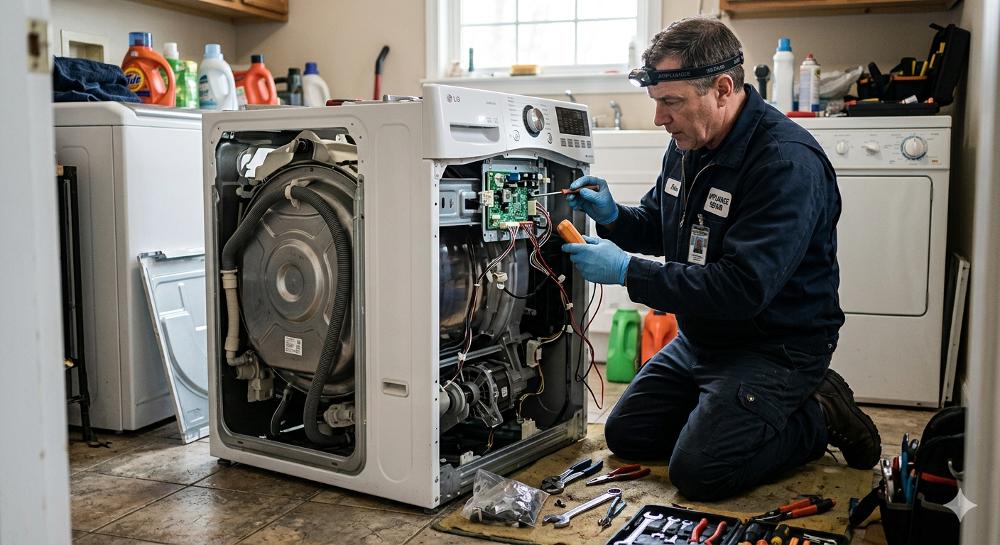

Assistência técnica em eletrodomésticos na Zona Sul de São Paulo
Na CastroTEC você encontra serviços especializados em conserto de geladeiras e máquinas de lavar em Moema, Vila Mariana e Capão Redondo.

Conserto de geladeira
Falha no resfriamento? Acúmulo excessivo de gelo? Ruídos estranhos? Vazamento de água? Alto consumo de energia? A CastroTEC dispõe de profissionais capacitados para lidar com qualquer problema.
Nossos profissionais têm ampla experiência com geladeiras Brastemp, Consul, LG, Electrolux, Samsung e Panasonic.

Conserto de máquina de lavar
Vazamentos de água? Ruídos altos? Falha na drenagem ou no enchimento? Trepidação excessiva? Mau cheiro nas roupas? Danos nos tecidos? A CastroTEC dispõe de profissionais capacitados para lidar com qualquer problema.
Nossos profissionais têm ampla experiência com máquinas de lavar Brastemp, Electrolux, LG, Samsung, Panasonic, Consul e Midea.